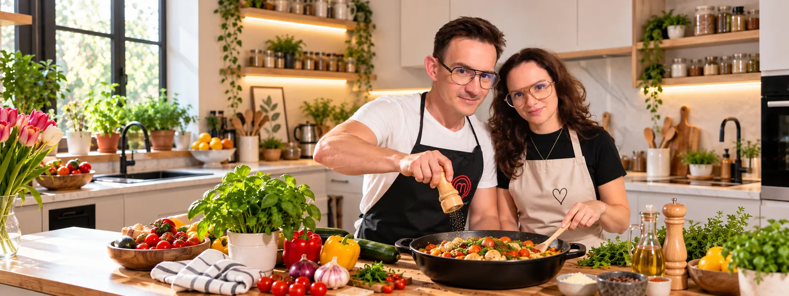
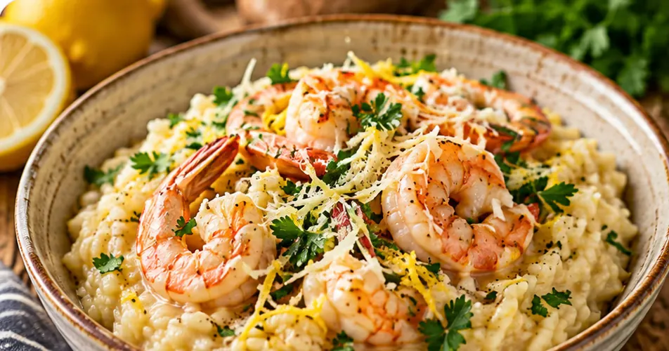
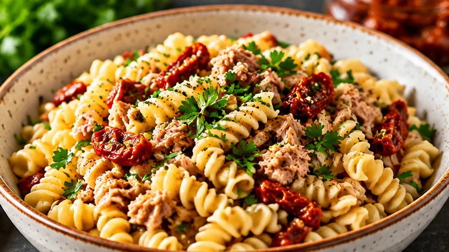
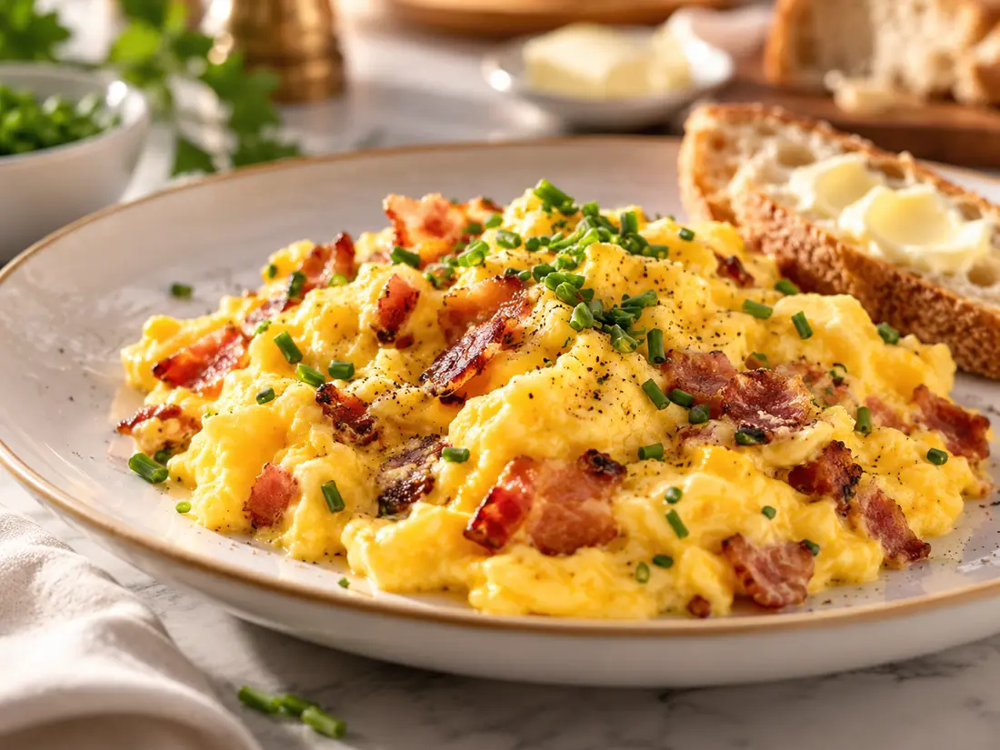
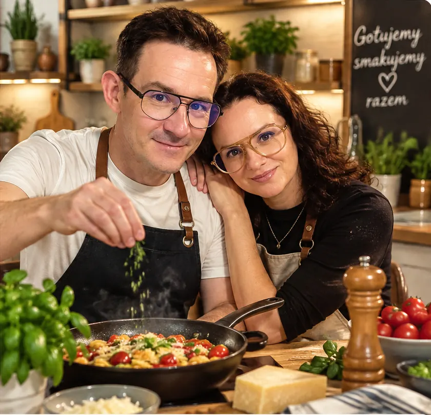

AGNIESZKA ♥ MICHAŁ · NASZA KUCHNIA
Gotujemy razem,bo najlepsze smaki powstają z miłości
Nasza wspólna kolekcja sprawdzonych przepisów – od rodzinnych klasyków po nowe kulinarne inspiracje.
Zobacz nasze przepisy →Odkrywaj nasze smaki ♡
Rodzinne historie i ulubione dania w jednym miejscu.

Gołąbki pani Gosi
Rodzinny przepis mamy Michała. Zdjęcia krok po kroku, składniki, lista zakupowa i oryginalna kartka z przepisem.
Zobacz pełny przepis →
Udka Agnieszki ♡
Soczyste udka w marynacie z musztardą Dijon, kremowe puree ziemniaczane i majonezowa surówka z kapusty pekińskiej. Cały rodzinny obiad dla 4 osób.
Zobacz pełny przepis →
Risotto z krewetkami
Kremowe włoskie risotto z soczystymi krewetkami, czosnkiem, parmezanem i nutą cytryny. Idealne na romantyczny obiad we dwoje.
Zobacz pełny przepis →
Makaron z tuńczykiem
Ciasno skręcone świderki, tuńczyk i suszone pomidory podsmażone na aromatycznym oleju z zalewy. Prosty obiad dla czterech osób.
Zobacz pełny przepis →Naleśniki z serem
Cienkie naleśniki z kremowym twarogiem, dżemem malinowym i słodką śmietaną. Nasz deser na wspólne, słodkie chwile.
Zobacz pełny przepis →
Whisky z Pepsi
Klasyczne połączenie w proporcji 1:5, z dwoma dużymi kostkami lodu, limonką i plasterkiem cytryny na brzegu szklanki.
Zobacz pełny przepis →
Jajecznica z boczkiem
Kremowa jajecznica z czterech miksowanych jajek, drobno podsmażonego boczku i szczypiorku. Podawana ze świeżym pieczywem i masłem.
Zobacz pełny przepis →
Kremowe puree Agnieszki
Delikatne, aksamitne purée ziemniaczane z masłem i mlekiem. Domowy dodatek, który doskonale pasuje do ulubionych obiadów.
Zobacz pełny przepis →
Kremowa surówka Agnieszki
Świeża kapusta pekińska, marchewka i jabłko połączone z kremowym sosem. Chrupiąca surówka do wspólnego obiadu.
Zobacz pełny przepis →Tu jeszcze pachnie oczekiwaniem...
W naszej kuchni najlepsze przepisy powstają z miłości. Agnieszka i Michał już szykują coś pysznego — zajrzyj do nas wkrótce!
Agnieszka i Michał
Dwie pasje, jedna kuchnia i mnóstwo wspólnych chwil.
Jesteśmy zakochaną parą po czterdziestce i każdego dnia odkrywamy, jak wiele radości daje nam bycie razem. Miłość do gotowania przyszła do nas naturalnie — wraz z chęcią dzielenia się smakami, pomysłami i codziennymi drobiazgami. Nasza kuchnia to miejsce, w którym rozmawiamy, śmiejemy się, eksperymentujemy i tworzymy wspomnienia, do których lubimy wracać. Kochamy domowe, sprawdzone przepisy, ale z ciekawością próbujemy też zupełnie nowych połączeń. Każde wspólnie przygotowane danie ma dla nas swoją historię, a czas spędzony przy gotowaniu jest równie ważny jak sam posiłek. Wierzymy, że najlepszym składnikiem każdej potrawy jest odrobina serca, dlatego chcemy dzielić się z Wami tym, co smakuje nam najbardziej.
